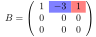
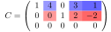
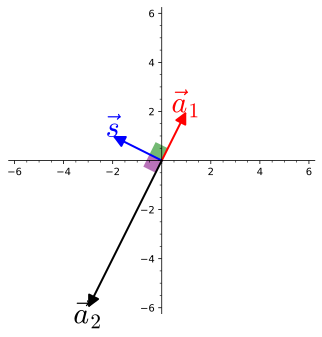

Dans cette section, on fait le lien entre les systèmes d’équations linéaires et les transformations linéaires. En particulier, on s’intéresse aux zéros de la transformation linéaire \(A\text{,}\) donnés par les solutions au système d’équations \(A\vec{x}=\vec{0}\) et à l’image de la transformation, caractérisée par l’ensemble des vecteurs \(\vec{b}\) pour lesquels il existe une solution au système \(A\vec{x}=\vec{b}\text{.}\)
Dans cette section, on définit le concept de zéros d’une transformation linéaire, la notion de solutions de base à l’équation \(A\vec{x}=\vec{0}\) et la notion de solution homogène ainsi que la sous-matrice \(L\) d’une matrice servant à trouver les solutions de base. On s’intéresse aussi à l’image d’une transformation linéaire, à la notion de solution particulière et de solution générale à l’équation \(A\vec{x}=\vec{b}\text{.}\)
Sous-section3.3.1Les zéros d’une transformation linéaire
On considère une matrice \(m\times n\) et le système d’équations linéaires \(A\vec{x}=\vec{0}\text{.}\) Un tel système est souvent appelé homogène.
Géométriquement, les solutions à ce système représentent l’ensemble des valeurs \(\vec{x}\) du domaine (\(\R^n\)) qui sont envoyées sur le vecteur nul de l’image (\(\R^m\)). Comme on l’a remarqué à la proposition 2.1.9, le vecteur \(\vec{0}\in \R^n\) est toujours une solution de ce système. De plus, si la matrice \(A\) est carrée et inversible, c’est la seule solution.
Dans les autres cas, il peut exister d’autres zéros à la transformation. On pourra les trouver à l’aide de l’algorithme de Gauss-Jordan 3.1.25.
Exemple3.3.1.Les zéros de quelques transformations: dynamique.
Dans un premier temps, on considère les transformations de l’exemple 2.1.13. Puisque toutes ces transformations sont inversibles sauf la projection orthogonale, on conclut qu’il n’y a que le vecteur nul comme zéro des premières. Pour la projection orthogonale, on peut réfléchir géométriquement. On cherche \(T(\vec{x})=\vec{0}\text{.}\) Or selon l’équation (1.2.5), un vecteur perpendiculaire à \(\vec{w}\) sera projeté sur le vecteur nul. Si \(c\in \R\text{,}\) tout vecteur \(c\vec{w}_{\perp}\) est un zéro de la projection orthogonale.
On regarde maintenant quelques exemples à trois dimensions. On considère les matrices
La figure interactive suivante permet de visualiser l’image d’un vecteur par chacune des transformations. Les détails algébriques se trouvent dans les solutions ci-dessous.
Instructions.
Instructions pour la figure interactive: L’interaction suivante permet de visualiser les zéros des transformations linéaires \(A\) et \(B\text{.}\) Il est possible de déplacer le point \(P\) afin de modifier le vecteur \(\vec{u}\text{.}\) Son image par la transformation choisie (\(A\) par défaut) est affichée en rouge. Un clic sur le bouton « Point \(P\) fixé sur l’espace solution » fera en sorte que \(P\) ne puisse être déplacé que sur des points où l’image du vecteur \(\vec{u}\) libre sera nulle. Un clic sur le bouton «Point \(P\) libre » libèrera le point \(P\) pour qu’il puisse prendre n’importe quelle valeur à nouveau.
Figure3.3.2.Les zéros de deux transformations linéaires de l’espace
Solution1.
On utilise Sage pour échelonner la matrice \(A\) et déterminer les solutions.
Les variables \(x,y\) sont pivots et la variable \(z\) est libre. En isolant les équations de la matrice échelonnée réduite, on trouve
Les vecteurs solutions au système \(A\vec{x}=\vec{0}\) sont donc ceux de la forme \(z(-2,-1,1)\text{.}\) On reconnait l’équation d’une droite dans \(\R^3\) passant par l’origine et de vecteur directeur \(\vec{v}=(-2,-1,1)\text{.}\)
Solution2.
On utilise Sage pour échelonner la matrice \(B\) et déterminer les solutions.
La variable \(x\) est pivot et les variables \(y,z\) sont libres. En isolant les équations de la matrice échelonnée réduite, on trouve
Les vecteurs solutions au système \(A\vec{x}=\vec{0}\) sont donc ceux de la forme \(y(2,1,0)+z(-3,0,1)\text{.}\) On reconnait l’équation d’un plan dans \(\R^3\) passant par l’origine et de vecteurs directeurs \(\vec{u}=(2,1,0)\) et \(\vec{v}=(-3,0,1)\text{.}\)
Les zéros d’une transformation linéaire possèdent une propriété particulièrement utile. Celle-ci fait l’objet de la proposition suivante.
Proposition3.3.3.Les zéros d’une transformation linéaire sont fermés pour l’addition et la multiplication par un scalaire.
Soit \(A\text{,}\) la matrice d’une transformation linéaire, \(c\in \R\) et \(\vec{u},\vec{v}\text{,}\) des vecteurs tels que \(A\vec{u}=A\vec{v}=\vec{0}\text{.}\) Alors
Si l’on s’attarde aux solutions des systèmes \(A\vec{x}=\vec{0}\) pour les matrices \(3\times 3\) de l’exemple 3.3.1, on peut y détecter une forme particulière des variables libres. Plus spécifiquement, pour l’exemple dont les solutions étaient contenues dans le plan de vecteurs directeurs \(\vec{u}=(2,1,0)\) et \(\vec{v}=(-3,0,1)\text{,}\) les variables libres étaient \(y\) et \(z\text{.}\) Ces variables valent respectivement \(1\) et \(0\) dans le vecteur \(\vec{u}\) et \(0\) et \(1\) dans le vecteur \(\vec{v}\text{.}\) Cette remarque permet d’établir une autre manière de voir les solutions à un système d’équations linéaires \(A\vec{x}=\vec{0}\text{.}\)
Définition3.3.4.Les solutions de base à un système \(A\vec{x}=\vec{0}\).
Soit \(A\text{,}\) une matrice quelconque telle que l’équation \(A\vec{x}=\vec{0}\) possède plus d’une solution. On nomme les « solutions de base » les solutions obtenues lorsqu’une seule une des variables libres est égale à \(1\) et que les autres sont nulles. 1
On verra à la section 5.2 que l’expression « de base » est reliée à la notion de base d’un espace vectoriel.
Il y a autant de solutions de base que de variables libres. Si la matrice \(A\) ne possède pas de variables libres, la seule solution à l’équation \(A\vec{x}=\vec{0}\) est le vecteur \(\vec{0}\text{.}\) Celui-ci n’est pas « spécial ».
L’ensemble de toutes les combinaisons linéaires des solutions de base additionnées du vecteur \(nul\) est appelé la solution homogène. On la note \(\vec{x}_h\text{.}\)
Les solutions de base sont un exemple du concept de base d’un espace qui sera défini dans le chapitre [provisional cross-reference: chap-espvec]. L’ensemble des combinaisons linéaires des solutions de base décrit le lieu « géométrique » où se trouvent tous les zéros d’une transformation linéaire. Suivant le nombre de ces solutions, ce lieu peut être une droite, un plan, un espace tridimensionnel ou un autre espace de dimension supérieure.
Par la nature des opérations élémentaires, toute solution à l’équation \(A\vec{x}=\vec{0}\) doit satisfaire le système équivalent menant à la solution paramétrique des combinaisons linéaires des solutions de base. Ainsi, ces combinaisons génèrent toutes les solutions.
On regarde maintenant des solutions de base de matrices échelonnées réduites.
Exemple3.3.5.Solutions de base de matrices échelonnées réduites.
On cherche à déterminer les solutions de base pour les matrices suivantes. Les matrices ne sont pas augmentées, car les solutions de base sont toujours obtenues lorsque la partie augmentée est le vecteur nul. L’information additionnelle de la colonne augmentée n’est donc pas utile.
Si l’on pose \(z=1\text{,}\) on obtient la solution de base \(\vec{s}=(1,2,1)\text{,}\) la solution homogène est donc \(\vec{x}_h=z\vec{s}\) pour \(z\in \R\text{.}\)
Solution2.
Ici, il y a deux variables libres, la deuxième et la troisième. Les équations restantes sont
Si l’on pose \(y=1\) et \(z=0\text{,}\) on obtient la première solution de base \(\vec{s}_1=(3,1,0)\text{.}\) Si l’on pose \(y=0\) et \(z=1\text{,}\) on obtient la deuxième solution de base \(\vec{s}_2=(-1,0,1)\text{.}\) La solution homogène est \(\vec{x}_h=y\vec{s}_1+z\vec{s}_2\) pour \(y,z\in \R\text{.}\)
Solution3.
Dans cet exemple, les variables \(x_1\) et \(x_3\) sont pivots et les variables \(x_2,x_4\) et \(x_5\) sont libres. On écrit les équations de ce système:
En posant \(x_2=1, x_4=x_5=0\text{,}\) on obtient la première solution de base \(\vec{s}_1=(-4,1,0,0,0)\text{.}\) En posant \(x_4=1, x_2=x_5=0\text{,}\) on obtient la deuxième solution de base \(\vec{s}_2=(-3,0,-2,1,0)\text{.}\) Finalement, en posant \(x_5=1,x_2=x_4=0\text{,}\) on obtient la troisième et dernière solution de base \(\vec{s}_3=(-1,0,2,0,1)\text{.}\)
La solution homogène est \(\vec{x}_h=a\vec{s}_1+b\vec{s}_2+c\vec{s}_3\) avec \(a,b,c\in \R\text{.}\)
Solution4.
Dans cet exemple, toutes les variables sont pivots. Il n’y a donc pas de solution de base. La seule solution à l’équation \(D\vec{x}=\vec{0}\) est le vecteur nul. Donc \(\vec{x}_h=\vec{0}\text{.}\)
Il ne semble pas pratique de devoir réécrire chaque fois les équations du système pour trouver les solutions de base. On peut, toutefois, lire ces solutions directement dans la matrice.
Exemple3.3.6.Lecture des solutions de base à partir de la matrice.
On considère à nouveau les matrices \(A,B,C\) et \(D\) de l’exemple 3.3.5.
On commence par la matrice \(A\text{.}\) Celle-ci avait une seule variable libre, \(z\text{,}\) et la solution de base trouvée était \(\vecddd{1}{2}{1}\text{.}\) On regarde la matrice \(A\text{,}\) particulièrement dans la troisième colonne (car la variable \(z\) est libre), les entrées un et deux (correspondant aux lignes non nulles).
Figure3.3.7.La solution de base de la matrice \(A\)
On peut y voir la valeur négative des composantes du vecteur de base \(s\text{.}\)
On détaille ci-dessous la lecture des matrices \(B\) et \(C\text{.}\) La matrice \(D\) n’est pas analysée, car il n’y a pas de solution de base.
Solution1.
On regarde maintenant la matrice \(B\text{.}\) Cette fois-ci, on s’intéresse à la deuxième et à la troisième colonne, car celles-ci correspondent aux variables libres, plus particulièrement à la première ligne de ces colonnes, car les autres sont nulles.

Figure3.3.8.La solution de base de la matrice \(B\)
Solution2.
On regarde maintenant la matrice \(C\text{.}\) Cette fois-ci, on s’intéresse aux deuxième, quatrième et cinquième colonnes, car celles-ci correspondent aux variables libres, plus particulièrement aux lignes un et deux de ces colonnes, car la troisième est nulle.

Figure3.3.9.La solution de base de la matrice \(C\)
Avec l’exemple précédent, on peut distinguer deux matrices à l’intérieur d’une matrice échelonnée réduite. En ne tenant pas compte des lignes nulles, on détecte dans les colonnes pivots une occurrence de la matrice identité. Toujours sans tenir compte des lignes nulles, les colonnes libres donnent lieu à une matrice, notée \(L\) (pour libre). Cette matrice contient l’information des solutions de base. On l’illustre à l’aide d’un exemple.
Les colonnes \(1,3\) et \(5\) sont pivots et les colonnes \(2,4\) et \(6\) sont libres. En éliminant les lignes nulles et les colonnes libres, on peut observer une matrice identité:
Figure3.3.11.La matrice identité dans la matrice échelonnée
En éliminant à nouveau les lignes nulles, mais en éliminant cette fois-ci les colonnes pivots plutôt que les libres, on obtient une autre sous-matrice \(L\text{:}\)
Figure3.3.12.La matrice \(L\) dans la matrice échelonnée
On montre maintenant comment on peut se servir de la matrice \(L\) pour obtenir les solutions de base. La matrice possède trois variables libres, \(x_2,x_4,x_6\text{.}\) Il y aura donc trois solutions de base. On écrit dans trois vecteurs \(\vec{s_1},\vec{s_2},\vec{s_3}\) la « matrice identité » de taille \(\min(m,n)-r\) 2
Attention, cette matrice identité n’est pas nécessairement celle de la sous-matrice. Elle est de la taille du nombre de variables libres.
, où \(r\) est le rang de la matrice (le nombre de variables pivots), aux positions libres (\(2,4,6\)). Dans ce cas-ci, \(\min(m,n)-r=6-3=3\text{:}\)
La taille des vecteurs \(\vec{s_i}\) est \(n\) si la matrice \(R\) est \(m\times n\text{.}\)
Pour compléter les vecteurs \(s_i\text{,}\) on utilise l’opposé des colonnes de la matrice \(L\text{,}\) la colonne \(1\) pour le vecteur \(s_1\) et ainsi de suite:
On vérifie à l’aide de Sage que les vecteurs ainsi trouvés sont en effet des solutions à l’équation \(R\vec{x}=\vec{0}\text{.}\)
On regarde maintenant un aspect important de la géométrie des solutions à l’équation \(A\vec{x}=\vec{0}\text{.}\) Si l’on voit la matrice \(A\) selon ses lignes,
Géométriquement, cela signifie que le vecteur solution \(\vec{x}\) est perpendiculaire à chaque ligne de la matrice. On vérifie ce fait dans l’exemple suivant.
Exemple3.3.13.Les zéros sont perpendiculaires aux lignes de la matrice.
On considère les matrices \(A,B\) et \(C\) ci-dessous:
Pour chaque matrice, on cherche les solutions de base et l’on vérifie que celles-ci sont perpendiculaires aux lignes de la matrice.
Solution1.
On échelonne la matrice \(A\text{.}\) L’opération \(3L_1+L_2\rightarrow L_2\) permet d’obtenir la matrice échelonnée réduite équivalente \(R=\begin{pmatrix} 1 & 2 \\ 0& 0 \end{pmatrix}\text{.}\) Il y a une variable libre et donc, une solution de base. Celle-ci est
La figure suivante permet d’observer la perpendicularité de cette solution (ou ses multiples) et des lignes de la matrice \(A\text{.}\)

Figure3.3.14.Les zéros de \(A\) sont perpendiculaires aux lignes
Solution2.
On utilise Sage et la méthode de l’exemple 3.3.10 pour déterminer les solutions de base de la matrice \(B\text{.}\)
La variable \(z\) est libre. Il y a une solution de base, qui est \(\vec{s}=\vecddd{-1/3}{5/3}{1}\text{.}\) La figure suivante permet de visualier la perpendicularité des multiples de la solution de base avec les lignes de la matrice.
Instructions.
Instructions pour la figure interactive: La figure montre la droite de vecteur directeur \(\vec{s}\) ainsi que les vecteurs correspondant aux lignes de la matrice \(B\text{.}\) Un clic sur « Faire apparaitre/disparaitre le plan » fera apparaitre le plan engendré par les combinaisons linéaires des lignes de la matrice \(B\text{.}\)
Figure3.3.15.
Comme la troisième ligne de la forme échelonnée réduite de \(B\) est nulle, on peut dire que le troisième vecteur est dans le plan engendré par les deux premières lignes. La géométrie de l’équation \(B\vec{x}=\vec{0}\) semble donc composée du plan engendré par les lignes de \(B\text{,}\) avec les zéros de la transformation linéaire sur le vecteur normal du plan.
Solution3.
On utilise Sage et la méthode de l’exemple [provisional cross-reference: ex-sousmatriceIL] pour déterminer les solutions de base de la matrice \(C\text{.}\)
Les variables \(y\) et \(z\) sont libres. Il y a deux solutions de base, qui sont \(\vec{s}_1=\vecddd{-2}{1}{0}\) et \(\vec{s}_2=\vecddd{3}{0}{1}\text{.}\) La figure suivante permet de visualiser la perpendicularité des combinaisons linéaires des solutions de base avec les lignes de la matrice.
Instructions.
Instructions pour la figure interactive: La figure montre le plan de vecteurs directeurs \(\vec{s}_1,\vec{s}_2\) ainsi que les vecteurs correspondant aux lignes de la matrice \(B\text{.}\) Un clic sur « Faire apparaitre/disparaitre la droite » fera apparaitre la droite engendrée par les combinaisons linéaires des lignes de la matrice \(B\text{.}\)
Figure3.3.16.
Comme la deuxième et la troisième ligne de la forme échelonnée réduite de \(C\) sont nulles, ces vecteurs sont des multiples de la première ligne. La géométrie de l’équation \(C\vec{x}=\vec{0}\) semble donc composée de la droite engendrée par les lignes de \(C\text{,}\) avec les zéros de la transformation linéaire sur le plan perpendiculaire à cette droite.
On fait de cette propriété une proposition.
Proposition3.3.17.Les zéros sont perpendiculaires aux lignes de la matrice.
Soit \(A\text{,}\) une matrice de taille \(m\times n\text{,}\)\(\vec{a}_i\text{,}\) la ligne \(i\) de la matrice et \(\vec{z}\text{,}\) un vecteur tel que \(A\vec{z}=\vec{0}\text{.}\)
Alors \(\vec{z}\cdot \vec{a}_i=0\text{,}\) c’est-à-dire que les zéros de la matrice sont perpendiculaires aux lignes de celle-ci.
Démonstration.
La preuve est essentiellement faite dans la discussion qui précède l’exemple 3.3.13.
On termine avec des commandes Sage en lien avec la sous-section.
Calcul3.3.18.La matrice L et les solutions de base.
On souhaite créer une fonction Sage qui retourne les solutions de base d’une matrice en reproduisant l’algorithme [provisional cross-reference: algo-solbase]. Pour cela, on crée d’abord une fonction matL qui va retourner la matrice \(L\) associée à la forme échelonnée réduite d’une matrice \(A\) quelconque. Voici quelques nouvelles fonctions Sage qui seront utiles et une manière d’ajouter des composantes à un vecteur:
Les fonctions matrix_from_rows et matrix_from_columns permettent de créer une matrice à partir des lignes ou des colonnes d’une autre matrice.
Parfois, on ne sait pas quelles seront les entrées d’un vecteur, ou bien l’on veut construire un vecteur en étape, une entrée à la fois. Pour effectuer cette opération, on utilisera plutôt une liste Sage que l’on convertira en vecteur par la suite. Par exemple, si l’on dispose d’une liste l1=[1,3,4] et d’une autre liste l2=[2,4,6] et qu’on veut créer les vecteurs qui prennent ces valeurs en alternant d’une liste à l’autre, on fera
On débute avec la création de la fonction qui retourne la matrice \(L\text{.}\) On se pose dans un premier temps la question suivante: est-ce que la matrice \(L\) existe toujours? Dans l’algorithme, on élimine les lignes de zéros et l’on ne garde que les colonnes libres. Que faire si toutes les lignes sont nulles ou si toutes les colonnes sont pivots? Dans ces cas, il n’y a pas de matrice \(L\text{,}\) mais l’interprétation est différente pour ce qui est des solutions de base. Lorsque toutes les lignes sont nulles, toutes les variables sont libres et l’ensemble solution est donc constitué de tous les vecteurs de l’espace \(\R^n\text{.}\) Si, au contraire, toutes les variables sont pivots, alors il n’y a pas de solution de base. La seule solution à \(A\vec{x}=\vec{0}\) est le vecteur nul. C’est dans ce deuxième cas qu’il faudra dire à notre fonction qu’il n’y a pas de solution de base.
Pour le cas où la matrice est nulle, selon l’algorithme [provisional cross-reference: algo-solbase], les solutions spéciales devraient sortir correctement et correspondre aux vecteurs \(\vec{e}_1,\vec{e}_2,\ldots , \vec{e}_n\) de l’espace \(\R^n\text{.}\)
Pour la matrice \(L\text{,}\) on a
On teste la fonction avec la matrice de l’exemple [provisional cross-reference: ex-sousmatriceIL]:
On va maintenant créer la fonction solbase(A), qui, à partir d’une matrice \(A\text{,}\) va retourner les solutions de base de l’équation \(A\vec{x}=\vec{0}\text{.}\) À l’intérieur de celle-ci, on va utiliser la fonction matL créée ci-dessus.
On teste la fonction avec la matrice de l’exemple [provisional cross-reference: ex-sousmatriceIL]:
Sous-section3.3.2L’image d’une transformation linéaire
L’équation \(A\vec{x}=\vec{0}\) a toujours une solution. Parfois, elle en a une infinité. Lorsqu’on remplace le vecteur nul par un vecteur quelconque, l’équation
peut ne pas avoir de solution(s). Étant donnée une matrice \(A\text{,}\) pour quel(s) vecteur(s) \(\vec{b}\) l’équation (✶) possède-t-elle au moins une solution?
Géométriquement parlant, quels sont les vecteurs qui sont atteints par la transformation linéaire \(A\text{,}\) c’est-à-dire, quels sont les vecteurs qui forment l’image de cette transformation? On explore quelques cas dans l’exemple suivant.
Exemple3.3.19.L’image de transformations géométriques: dynamique.
On cherche à visualiser l’image de chacune de ces transformations. Pour cela, on utilise les figures interactives suivantes.
Instructions.
Instructions pour la figure interactive: Déplacer le point \(A\) afin de vérifier que n’importe quel vecteur de \(\R^2\) peut être atteint par un vecteur \(\vec{u}\text{.}\) L’image de la transformation \(R_\theta\) est donc \(\R^2\) et ce, peu importe la valeur de \(\theta\) choisie.
Figure3.3.20.L’image de la transformation \(R_\theta\)
Instructions.
Instructions pour la figure interactive: Déplacer le point \(A\) afin de visualiser la transformation \(P\text{.}\) L’image de la transformation \(P\) semble restreinte à la droite \(y=x\text{.}\)
Figure3.3.21.L’image de la transformation \(P\)
Instructions.
Instructions pour la figure interactive: Déplacer le point \(A\) afin de visualiser la transformation \(B\text{.}\) Un clic sur « Faire apparaitre l’image » permet de voir que les vecteurs images sont toujours restreints à un plan.
Figure3.3.22.L’image de la transformation \(B\)
Instructions.
Instructions pour la figure interactive: Déplacer le point \(A\) afin de visualiser la transformation \(C\text{.}\) Un clic sur « Faire apparaitre l’image » permet de voir que les vecteurs images sont toujours restreints à une droite.
Figure3.3.23.L’image de la transformation \(C\)
À l’exemple 3.3.24, on détermine algébriquement les images de ces transformations.
Pour déterminer l’image d’une transformation linéaire \(A\text{,}\) on augmente la matrice \(A\) avec un vecteur \(\vec{b}\) quelconque. En échelonnant la matrice, on obtiendra des conditions sur les entrées de \(\vec{b}\) pour que le système possède au moins une solution. Ceci provient du fait qu’un système compatible doit avoir des entrées nulles dans la partie augmentée s’il y a des lignes nulles dans la forme échelonnée réduite de \(A\text{.}\)
On trouve les images des transformations de l’exemple 3.3.19.
Exemple3.3.24.L’image de transformations algébriques.
On considère à nouveau les matrices de l’exemple 3.3.19. On détermine algébriquement les images de ces transformations.
Solution1.
On pose \(\vec{b}=\vecd{b_1}{b_2}\) et l’on augmente la matrice \(\R_\theta\) avec le vecteur \(\vec{b}\text{,}\) afin de procéder à l’échelonnage. On débute en supposant que \(\cos(\theta)\neq 0\text{.}\)
Comme toutes les colonnes sont pivots et qu’il n’y a pas de lignes nulles, on peut conclure que peu importe la valeur du vecteur \(\vec{b}\text{,}\) une solution existe (ce qui n’est pas surprenant, compte tenu de la géométrie de la rotation). En plus, on obtient cette solution en fonction des entrées de \(\vec{b}\text{.}\)
Puisque l’on a divisé par \(\cos(\theta)\text{,}\) on doit voir ce qui se passe lorsque ce dernier vaut \(0\text{.}\) Si c’est le cas, alors \(\sin(\theta)=-1\) ou \(\sin(\theta)=1\text{.}\) Dans les deux cas, la matrice se réduit aussi à l’identité à l’aide d’une permutation de lignes et d’une multiplication d’une ligne par \(-1\text{.}\)
Solution2.
On pose \(\vec{b}=\vecd{b_1}{b_2}\) et l’on augmente la matrice \(P\) avec le vecteur \(\vec{b}\text{,}\) afin de procéder à l’échelonnage.
La matrice est déjà sous la forme échelonnée réduite et l’on constate que la dernière ligne (de la partie non augmentée) est nulle. Pour que le système possède une solution, il faut que le terme augmenté dans la dernière ligne soit nul aussi, c’est-à-dire, il faut que \(b_2-b_1=0\text{.}\) En réécrivant, on se rend compte que les vecteurs de l’image doivent satisfaire \(b_1=b_2\text{.}\) Ce sont précisément les vecteurs sur la droite de la figure 3.3.21.
La matrice est déjà sous la forme échelonnée réduite et l’on constate que les deux dernières lignes (de la partie non augmentée) sont nulles. Pour que le système possède une solution, il faut que les termes de la partie augmentée dans ces lignes soient nuls aussi, c’est-à-dire, il faut que \(b_2+2b_1=0\) et \(b_3+b_1=0\text{.}\) Ceci amène un nouveau système d’équations linéaires homogène à deux équations et trois inconnues. La matrice de ce système est
On utilise la fonction solbase définie plus haut afin de trouver les solutions de base de ce système.
Les vecteurs composant l’image de la transformation linéaire \(C\) se trouvent donc sur les combinaisons linéaires (donc ici, la droite) du vecteur \(\vec{s}=(-1,2,1)\text{.}\) Ceci coïncide bien avec la droite de la figure 3.3.23, comme le montre l’animation suivante.
Instructions.
Instructions pour la figure interactive: Déplacer le point \(A\) afin de visualiser la transformation \(C\text{.}\) Cliquer sur le texte pour décomposer le vecteur directeur et suivre les instructions apparaissant.
Figure3.3.25.L’image de la transformation \(C\)
Les vecteurs de l’image possèdent une propriété similaire à celle 3.3.3 de l’ensemble des zéros.
Proposition3.3.26.L’image d’une transformation est fermée pour l’addition et la multiplication par un scalaire.
Soit \(A\text{,}\) la matrice d’une transformation linéaire, \(c\in \R\) et \(\vec{b}_1,\vec{b}_2\text{,}\) des vecteurs tels que \(A\vec{x}=\vec{b}_1\) et \(A\vec{x}=\vec{b}_2\) possèdent au moins une solution. Alors
\(A\vec{x}=\vec{b}_1+\vec{b}_2\) possède au moins une solution,
\(A\vec{x}=c\vec{b}_1\) possède au moins une solution.
On termine avec des commandes Sage en lien avec la sous-section.
Calcul3.3.27.L’image de transformations linéaires et Sage.
Sage ne pourra pas travailler directement avec les variables comme \(b_1,b_2,b_3\) si on ne l’aide pas un peu. Pour déterminer l’image d’une transformation avec Sage, trois ajustements seront nécessaires. Leur raison d’être est liée au fonctionnement du logiciel et dépasse le niveau du manuel. On se contente d’appliquer la solution. On constate l’ajout d’une ligne R.<b1,b2,b3>=QQ[] au code. De plus, la colonne augmentée est inscrite à même la matrice. Finalement, on note l’utilisation de la fonction echelon_form() plutôt que le standard rref(). Avec ces ajustements, on peut obtenir la forme échelonnée réduite de la matrice avec le vecteur \(\vec{b}\) variable.
On procède avec les matrices \(B,C\) de l’exemple 3.3.19.
On trouve la condition \(b_3-b_1-b_2=0\text{.}\) On reconnait ici l’équation normale d’un plan dans \(\R^3\text{.}\) On pourrait trouver l’équation vectorielle en isolant par exemple \(b_3\) ou encore en utilisant solbase. Puisque ceci est un exemple Sage, on choisit ce bazooka pour tuer une mouche. 3
On trouve une équation vectorielle pour ce même plan: \((x,y,z)=r(-1,1,0)+s(1,0,1)\text{.}\)
On regarde maintenant l’image de la matrice \(C\text{.}\)
On trouve les mêmes deux conditions \(2b_1+b_2=0\) et \(b_1+b_3=0\) sur le vecteur \(\vec{b}\) que lors de l’exemple 3.3.24. La solution sera bien sûr encore la droite de vecteur directeur \((-1,2,1)\text{.}\)
Remarque3.3.28.
Le lecteur astucieux aura peut-être remarqué que les vecteurs directeurs des droites de l’image des matrices \(P\) et \(C\) de cette sous-section étaient un multiple d’une colonne de ces matrices. Le lecteur encore plus astucieux aura peut-être même remarqué que les vecteurs directeurs du plan de l’image de la matrice \(B\) trouvés à l’exemple calculatoire 3.3.27 sont des combinaisons linéaires de deux des colonnes de la matrice. En effet,
Pour comprendre cela, on se rappelle que le produit \(A\vec{x}\) peut être interprété comme les combinaisons linéaires des colonnes de la matrice \(A\). L’ensemble des \(\vec{b}\) s’écrivant comme ces combinaisons linéaires constitue donc l’image de la transformation \(A\text{.}\)
Il semble toutefois qu’il n’est pas nécessaire d’utiliser toutes les colonnes pour engendrer l’image, comme le montrent les images des matrices \(P,C\) et \(B\text{.}\) La section [provisional cross-reference: sec-bases4ssesp] va donner la réponse à cette question.
Sous-section3.3.3La solution générale à \(A\vec{x}=\vec{b}\text{.}\)
Les solutions à l’équation \(A\vec{x}=\vec{0}\) s’écrivent toutes comme des combinaisons linéaires des vecteurs de base. Selon le nombre de vecteurs de base, ces solutions se trouvent sur une droite (un vecteur), un plan (deux vecteurs) ou plus généralement un hyperplan (trois vecteurs ou plus) passant par l’origine. Lorsque le vecteur nul est remplacé par un vecteur \(\vec{b}\) quelconque, les solutions ont toujours la forme de droites, plans ou hyperplans, mais ceux-ci ne passent plus nécessairement par l’origine. Il est possible d’écrire toutes les solutions à l’équation \(A\vec{x}=\vec{b}\) comme la translation des solutions à l’équation \(A\vec{x}=\vec{0}\text{,}\) un peu à l’image de la figure 1.3.13.
En fait, si l’on suit la démarche de la section 3.2 lorsqu’il y a infinité de solutions, c’est précisément ce qui se passait lorsqu’on isolait les variables pivots en fonction des variables libres. On ne fait donc que faire le lien avec la première sous-section.
Exemple3.3.29.Des systèmes à quatre équations et trois inconnues, prise deux.
Pour la matrice \(A\text{,}\) le vecteur \(\vecddd{-\frac{2}{3}}{-\frac{1}{9}}{1}\) devrait être celui de la solution de base et le vecteur \(\vecddd{\frac{1}{2}}{-\frac{4}{3}}{0}\) représente la translation de la droite de vecteur directeur \(\vecddd{-\frac{2}{3}}{-\frac{1}{9}}{1}\text{.}\) On vérifie avec la fonction solbase et la matrice \(A\text{.}\) Malheureusement, on doit la redéfinir puisque l’on n’est pas dans la section principale du texte.
Pour la matrice \(B\text{,}\) les vecteurs \(\vecddd{-6}{1}{0}\) et \(\vecddd{3}{0}{1}\) devraient être ceux des solutions de base et le vecteur \(\vecddd{3}{0}{0}\) représente la translation du plan engendré par les deux premiers vecteurs. On vérifie avec la fonction solbase et la matrice \(B\text{.}\)
On obtient la proposition suivante, sur l’allure des solutions à l’équation \(A\vec{x}=\vec{b}\text{.}\)
Proposition3.3.30.La forme générale des solutions à l’équation \(A\vec{x}=\vec{b}\).
Soit \(A\text{,}\) une matrice \(m\times n\text{,}\)\(\vec{b}\text{,}\) un vecteur de \(\R^m\) pour lequel l’équation \(A\vec{x}=\vec{b}\) possède au moins une solution et soit \(\vec{x}_h\text{,}\) la solution à l’équation homogène \(A\vec{x}=\vec{0}\text{.}\) Finalement, soit \(\vec{x}_p\text{,}\) une solution particulière à l’équation \(A\vec{x}=\vec{b}\text{.}\) Alors
On montre maintenant que toute solution à l’équation \(A\vec{x}=\vec{b}\) peut s’écrire sous cette forme. Soit \(\vec{x}\text{,}\) une solution à \(A\vec{x}=\vec{b}\text{.}\) On remarque que
où les vecteurs \(\vec{s}_1,\vec{s}_2,\ldots , \vec{s}_k\) sont les solutions de base de l’équation homogène. En laissant \(\vec{x}\) représenter n’importe quelle solution à \(A\vec{x}=\vec{b}\) et en l’isolant dans l’équation (3.3.1), on a
Une manière facile de trouver une solution particulière à l’équation \(A\vec{x}=\vec{b}\) est de prendre celle pour laquelle les variables libres sont toutes égales à \(0\text{.}\) Dans la géométrie, cela va correspondre au vecteur translatant la solution homogène.
Exemple3.3.31.La solution particulière à un système d’équations linéaire.
On reprend les systèmes \((A|b_1),(B|b_2)\) de l’exemple 3.3.29. De plus, on considère la matrice échelonnée réduite
On fait la matrice \(A\) et la matrice \(B\) ensemble. On échelonne ces systèmes afin de voir comment lire la solution particulière.
La solution particulière pour la matrice \(A\) était \(\vecddd{\frac{1}{2}}{-\frac{4}{3}}{0}\text{.}\) Ce vecteur est celui obtenu lorsque la variable libre est nulle. On remarque qu’il se trouve dans la dernière colonne de la matrice augmentée échelonnée réduite. Les entrées importantes se trouvent sur chaque ligne où il y a un pivot. L’entrée de la partie augmentée ira dans la composante de la solution particulière correspondant à la colonne qui est le pivot de la ligne. Les autres entrées du vecteur \(\vec{x}_p\) sont nulles.
Ainsi, pour la matrice \(B\text{,}\) on obtient \(\vec{x}_p=\vecddd{3}{0}{0}\text{,}\) puisque la seule variable non libre est la première et les deux suivantes sont libres.
Solution2.
Selon ce qui est mentionné à la fin de la démarche pour les matrices \(A,B\text{,}\) la solution particulière se trouve dans la partie augmentée. Les lignes un et deux contiennent des pivots. Ce sont donc les entrées \(2\) et \(-4\) qui sont importantes. Les pivots sont aux colonnes deux et quatre. La solution particulière est donc \(\vec{x}_p=(0,2,0,-4)\text{.}\)
On termine avec des commandes Sage en lien avec la sous-section.
Calcul3.3.32.La solution générale avec Sage.
Dans cet exemple, on s’intéresse à créer une fonction solgen qui, étant donné une matrice et un vecteur, va retourner la solution générale à l’équation \(A\vec{x}=\vec{b}\text{.}\) La fonction devrait être relativement simple à créer, puisqu’on peut partir de la fonction solbase qui retourne déjà les solutions de base. Ce qu’il faut considérer est que maintenant, il se peut que l’équation \(A\vec{x}=\vec{b}\) ne possède pas de solution(s). Pour cela, on utilise la proposition 3.2.11.
Pour ce qui est de la solution particulière, il suffit de rappeler que les entrées importantes de celle-ci se trouvent dans la colonne augmentée de la matrice. Ces entrées sont dans les lignes non nulles de la forme échelonnée réduite et vont à la position du pivot de cette ligne.
On essaie maintenant la fonction solgen avec les systèmes de l’exemple 3.3.31.
Conseil3.3.33.L’importance de tester son code.
Lorsqu’on code une fonction, il est important de bien la tester afin de vérifier qu’elle répond aux attentes et que des cas particuliers ne causent pas de problèmes. Par exemple, la fonction matL échelonne une matrice, enlève les lignes nulles et retourne la sous-matrice des colonnes qui ne sont pas pivots.
Est-ce qu’elle fonctionne toujours lorsque la matrice est déjà échelonnée?
Qu’arrive-t-il si toutes les variables sont pivots? Est-ce la réponse attendue?
Et si aucune des variables n’est pivot? Il faut qu’une autre fonction utilisant matL puisse se servir de la réponse « vide ».
Dans le cas de la fonction solbase, on a pensé à gérer le cas où il n’y a pas de solution. Est-ce qu’il y a d’autres potentiels problèmes?
Encore une fois, si l’on utilise la fonction solbase dans une autre fonction, est-ce que notre retour à un cas comme cela pourra être utilisé adéquatement par cette autre fonction?
Même question s’il n’y a pas de solution de base?
Finalement, la fonction solgen prend deux arguments. L’ordre de ces arguments est-il important? Et si les arguments n’étaient pas du tout ce à quoi la fonction s’attend? Ce genre de problème peut être prévenu à l’aide de « gestion d’erreurs », mais on ne considère pas cela ici.
Les points importants de cette section sont:
Le fait que l’addition et la multiplication par un scalaire 3.3.3 de solutions à l’équation \(A\vec{x}=\vec{0}\) restent des solutions et que deux vecteurs de l’image se combinent de manière similaire pour rester dans l’image.
De plus, avec Sage, on a les commandes matrix_from_rows et matrix_from_columns qui permettent d’extraire d’une matrice une sous-matrice selon les lignes ou colonnes souhaitées. Les fonctions matL, solbase(A) et solgen seront utiles plus tard. On a aussi vu comment utiliser les listes pour créer en étape un vecteur. Pour travailler de manière symbolique, on a vu l’utilisation de la commande echelon_form et l’ajout de R.<variables>.QQ[] afin de pouvoir manipuler les variables dans <variables>.
Exercices3.3.4Exercices
1.Le produit vectoriel.
Dans cet exercice, on s’intéresse à trouver les vecteurs de \(\R^3\) qui sont perpendiculaires à deux vecteurs donnés. Essentiellement, on cherche à trouver le vecteur normal au plan engendré par les deux vecteurs donnés.
(a)
Soit \(\vec{u}=(1,1,1),\vec{v}=(2,3,4)\text{.}\) On cherche \(\vec{w}=(w_1,w_2,w_3)\) tel que \(\pscal{w}{u}=0\) et \(\pscal{w}{v}=0\text{.}\) Écrire le système d’équations linéaires associé à ces équations et le résoudre.
Réponse.
\(\vec{w}_h=k(1,-2,1)\) avec \(k \in \R\)
Solution.
On écrit les équations obtenues en remplaçant par les vecteurs donnés et le vecteur quelconque \(\vec{w}\text{.}\)
La matrice \(A=\begin{pmatrix}1 & 1 & 1 \\ 2 & 3 & 4\end{pmatrix}\) et le vecteur \(\vec{w}=\vecddd{w_1}{w_2}{w_3}\) résument le système d’équations linéaires dans l’équation matricielle \(A\vec{w}=\vec{0}\text{.}\) C’est un système homogène. On va donc l’échelonner sans la partie augmentée.
Si l’on pose \(w_3=1\text{,}\) on obtient la solution de base \(\vec{w}=(1,-2,1)\text{.}\) La solution homogène est donc \(\vec{w}_h=k(1,-2,1)\) avec \(k \in \R\text{.}\)
(b)
Soit \(\vec{u}=(3,1,2),\vec{v}=(-2,1,5)\text{.}\) On cherche \(\vec{w}=(w_1,w_2,w_3)\) tel que \(\pscal{w}{u}=0\) et \(\pscal{w}{v}=0\text{.}\) Écrire le système d’équations linéaires associé à ces équations et le résoudre.
Réponse.
\(\vec{w}_h=k(\frac{3}{5},-\frac{19}{5},1)\) avec \(k \in \R\)
Solution.
On écrit les équations obtenues en remplaçant par les vecteurs donnés et le vecteur quelconque \(\vec{w}\text{.}\)
La matrice \(A=\begin{pmatrix}3 & 1 & 2 \\ -2 & 1 & 5\end{pmatrix}\) et le vecteur \(\vec{w}=\vecddd{w_1}{w_2}{w_3}\) résument le système d’équations linéaires dans l’équation matricielle \(A\vec{w}=\vec{0}\text{.}\) C’est un système homogène. On va donc l’échelonner sans la partie augmentée.
Si l’on pose \(w_3=1\text{,}\) on obtient la solution de base \(\vec{w}=(\frac{3}{5},-\frac{19}{5},1)\text{.}\) La solution homogène est donc \(\vec{w}_h=k(\frac{3}{5},-\frac{19}{5},1)\) avec \(k \in \R\text{.}\)
(c)
Dans les deux calculs précédents, quelle est la plus petite valeur positive de la variable libre qui fait en sorte que les entrées du vecteur \(\vec{w}\) sont toutes entières? Quels sont ces vecteurs \(\vec{w}\text{?}\)
Réponse.
\(w_3=1\) et \(\vec{w}=(1,-2,1)\)
\(w_3=5\) et \(\vec{w}=(3,-19,5)\)
(d)
Refaire les parties 3.3.4.1.a et 3.3.4.1.b en remplaçant le vecteur \(\vec{u}\) par un vecteur quelconque \(\vec{u}=(u_1,u_2,u_3)\text{.}\) Compléter les cellules Sage ci-dessous pour faire les calculs.
Sélectionner à nouveau une valeur pour \(w_3\) qui évite les fractions.
Solution.
var("u1,u2,u3")
u=vector([u1,u2,u3])
v=vector([2,3,4])
R.<u1,u2,u3>=QQ[]
A=matrix([u,v])
rrefA=A.echelon_form()
show("rref(A)=",rrefA.simplify_full()) #On utilise la fonction simplify_full() pour que les fractions soient réduites
Bloc de code3.3.34.Le code solution pour la lettre (a)
On choisit la valeur \(w_3=3u_1-2u_2\) pour obtenir le vecteur ayant des valeurs entières \(\vec{w}=(4u_2-3u_3,-4u_1+2u_3,3u_1-2u_2)\text{.}\)
Bloc de code3.3.35.Le code solution pour la lettre (b)
On choisit la valeur \(w_3=u_1+2u_2\) pour obtenir le vecteur à valeurs entières \(\vec{w}=(5u_2-u_3,-5u_1-2u_3,u_1+2u_2)\text{.}\)
(e)
Refaire la partie 3.3.4.1.a en remplaçant les vecteurs \(\vec{u},\vec{v}\) par un vecteur quelconque \(\vec{u}=(u_1,u_2,u_3),\vec{v}=(v_1,v_2,v_3)\text{.}\) Compléter la cellule Sage ci-dessous pour faire les calculs
Sélectionner à nouveau une valeur pour \(w_3\) qui évite les fractions.
On choisit la valeur \(w_3=-u_{2} v_{1} + u_{1} v_{2}\) pour obtenir le vecteur à valeurs entières \(\vec{w}=\left(-u_{3} v_{2} + u_{2} v_{3},\,u_{3} v_{1} - u_{1} v_{3},\,-u_{2} v_{1} + u_{1} v_{2}\right)\text{.}\)
Le vecteur \(\vec{w}=\left(-u_{3} v_{2} + u_{2} v_{3},\,u_{3} v_{1} - u_{1} v_{3},\,-u_{2} v_{1} + u_{1} v_{2}\right)\) est appelé le produit vectoriel de \(\vec{u}\) et \(\vec{v}\text{,}\) et est noté \(\vec{w}=\vec{u}\times \vec{v}\text{.}\) On y reviendra à la section [provisional cross-reference: sec-prodvec].
Ce vecteur a été obtenu en prenant la variable libre dans le système d’équations linéaires comme étant égale à \(w_3=u_1v_2-u_2v_1\) pour éliminer une fraction. Il se peut toutefois que ce nombre soit nul. Dans la section [provisional cross-reference: sec-prodvec], on montrera que ce n’est pas un problème.
Déterminer les solutions de base en fonction de \(x\text{.}\)
Réponse.
Si \(x \neq \pm 3\text{,}\) alors \(\vec{s}=\vec{0}\text{.}\)
Si \(x = \pm 3\text{,}\) alors \(\vec{s}=\vecddd{-2}{0}{1}\text{.}\)
Solution.
Pour trouver les solutions, il faut échelonner la matrice. Puisqu’on cherche les solutions de base, il n’est pas nécessaire d’échelonner la matrice augmentée du système puisque cette colonne sera toujours nulle.
La dernière étape n’est possible que si \(x^2-9\neq 0\text{.}\) Cela nous amène à séparer les solutions possibles en deux groupes, selon les valeurs de \(x\text{.}\)
D’abord, si \(x^2-9\neq 0 \Leftrightarrow (x-3)(x+3) \neq 0 \Leftrightarrow x \neq \pm 3\text{,}\) alors, toutes les variables sont pivots et le système \(A\vec{x}=\vec{0}\) a une seule solution qui est le vecteur nul. On a donc \(\vec{s}=\vec{0}\text{.}\)
Ensuite, si \(x=3\text{,}\) alors la matrice échelonnée devient:
et on peut ainsi lire le vecteur solution de base dans la colonne pivot en changeant le signe des valeurs et en posant la variable pivot à \(1\) : \(\vec{s}=\vecddd{-2}{0}{1}\text{.}\)
Finalement, si \(x=-3\text{,}\) la matrice échelonnée est la même et donc la solution de base est la même.
Déterminer les solutions de base en fonction de \(x\) et \(y\text{.}\)
Réponse.
Si \(x \neq 0\) et \(x\neq 1\text{,}\) alors \(\vec{s}=\vecddd{3}{-\frac{3x+y}{x-1}}{1}\text{.}\)
Si \(x \neq 0\text{,}\)\(x=1\) et \(y\neq -3\text{,}\) alors \(\vec{s}=\vecddd{0}{1}{0}\text{.}\)
Si \(x \neq 0\text{,}\)\(x=1\) et \(y=-3\text{,}\) alors \(\vec{s}_1=\vecddd{3}{0}{1}\) et \(\vec{s}_2=\vecddd{0}{1}{0}\text{.}\)
Si \(x=0\text{,}\) alors \(\vec{s}=\vecddd{3}{y}{1}\text{.}\)
Solution.
Pour trouver les solutions, il faut échelonner la matrice. Puisqu’on cherche les solutions de base, il n’est pas nécessaire d’échelonner la matrice augmentée du système puisque cette colonne sera toujours nulle.
Les deux dernières étapes ne sont possibles que si \(x\neq 0\text{,}\) puis si \(x\neq 1\text{.}\) Cela nous amène à séparer les solutions possibles en trois groupes, selon les valeurs de \(x\text{.}\)
D’abord, si \(x \neq 0\) et \(x\neq 1\text{,}\) alors, on lit le vecteur solution de base dans la colonne pivot en changeant le signe des valeurs et en posant la variable pivot à \(1\text{:}\)\(\vec{s}=\vecddd{3}{-\frac{3x+y}{x-1}}{1}\text{.}\)
Ensuite, si \(x=1\text{,}\) alors, la matrice échelonnée devient:
Cette avant-dernière étape n’est possible que si \(y\neq -3\text{.}\) Dans ce cas, le vecteur solution de base est \(\vec{s}=\vecddd{0}{1}{0}\text{,}\) car les variables non-pivots sont forcées à être égales à \(0\text{.}\) Autrement, si \(y=-3\text{,}\) alors la matrice échelonnée devient:
On a maintenant deux variables pivots et une seule non-pivot. Les vecteurs solutions de base sont donc: \(\vec{s}_1=\vecddd{3}{0}{1}\) et \(\vec{s}_2=\vecddd{0}{1}{0}\text{.}\) On les a obtenus en posant alternativement chaque variable libre égale à \(1\) et \(0\text{.}\)
Finalement, si \(x=0\text{,}\) la matrice échelonnée devient:
On lit le vecteur solution de base dans la colonne pivot en changeant le signe des valeurs et en posant la variable pivot à \(1\text{:}\)\(\vec{s}=\vecddd{3}{y}{1}\text{.}\)
4.
Un plan a comme équation \(2x+5y-10z=0\text{.}\) En fonction de ce plan, que représente la solution homogène à l’équation \(\begin{pmatrix} 2& 5& -10\end{pmatrix}\vecddd{x}{y}{z}=0\text{?}\) Donner cette solution.
Réponse.
L’équation vectorielle de ce plan. La solution homogène est:
\begin{equation*}
\vec{x}_h=a\vecddd{-\frac{5}{2}}{1}{0}+b\vecddd{5}{0}{1}\text{ avec } a,b\in\R
\end{equation*}
Solution.
Puisque l’équation sous forme matricielle représente la même équation, il s’agit du même plan. La solution homogène correspondra à l’équation vectorielle de ce plan passant par l’origine. Les vecteurs directeurs seront donnés par les solutions de base. La matrice échelonnée sera:
On l’interprète en posant que les variables libres \(y\) et \(z\) respectivement égales à \(1,0\) puis à \(0,1\text{.}\) Les vecteurs solutions de base sont donc: \(\vec{s}_1=\vecddd{-\frac{5}{2}}{1}{0}\) et \(\vec{s}_2=\vecddd{5}{0}{1}\text{.}\) La solution homogène est :
\begin{equation*}
\vec{x}_h=a\vecddd{-\frac{5}{2}}{1}{0}+b\vecddd{5}{0}{1}\text{ avec } a,b\in\R
\end{equation*}
Le plan est donc décrit par l’équation vectorielle :
\begin{equation*}
\mathcal{P}: \vecddd{x}{y}{z}=a\vecddd{-\frac{5}{2}}{1}{0}+b\vecddd{5}{0}{1}\text{ avec } a,b\in\R\text{.}
\end{equation*}
5.
Un plan a comme équation \(2x+5y-10z=20\text{.}\) En fonction de ce plan, que représente la solution générale à l’équation \(\begin{pmatrix} 2& 5& -10\end{pmatrix}\vecddd{x}{y}{z}=20\text{?}\) Donner cette solution.
Réponse.
L’équation vectorielle de ce plan. La solution générale est:
\begin{equation*}
\vec{x}_g=\vec{x}_h+\vec{x}_p=a\vecddd{-\frac{5}{2}}{1}{0}+b\vecddd{5}{0}{1}+\vecddd{10}{0}{0}\text{ avec } a,b\in\R
\end{equation*}
Solution.
Puisque l’équation sous forme matricielle représente la même équation, il s’agit du même plan. La solution générale correspondra à l’équation vectorielle de ce plan passant par un point de départ qui correspond à la solution particulière. Les vecteurs directeurs seront donnés par les solutions de base. La matrice augmentée échelonnée sera:
La solution homogène, qui a déjà été trouvée à l’exercice 3.3.4.4, est :
\begin{equation*}
\vec{x}_h=a\vecddd{-\frac{5}{2}}{1}{0}+b\vecddd{5}{0}{1}\text{ avec } a,b\in\R\text{.}
\end{equation*}
La solution particulière est obtenue de la matrice augmentée en posant toutes les variables libres égales à \(0\text{.}\) Puisque seule la première variable est pivot, c’est donc elle qui prendra la seule valeur dans la partie augmentée. La solution particulière est donc:
\begin{equation*}
\vec{x}_g=\vec{x}_h+\vec{x}_p=a\vecddd{-\frac{5}{2}}{1}{0}+b\vecddd{5}{0}{1}+\vecddd{10}{0}{0}\text{ avec } a,b\in\R\text{.}
\end{equation*}
Le plan est donc décrit par l’équation vectorielle :
\begin{equation*}
\mathcal{P}: \vecddd{x}{y}{z}=a\vecddd{-\frac{5}{2}}{1}{0}+b\vecddd{5}{0}{1}+\vecddd{10}{0}{0}\text{ avec } a,b\in\R\text{.}
\end{equation*}
6.
Soit \(R\text{,}\) une matrice échelonnée réduite. Dans la figure ci-dessous, on retrouve la solution de base à l’équation \(R\vec{x}=\vec{0}\) et la solution particulière à l’équation \(R\vec{x}=\vec{b}\text{.}\) Entrer sur la figure les valeurs pour la matrice \(R\) et le vecteur \(\vec{b}\) qui correspondent à cette géométrie.
Instructions.
Instructions pour la figure interactive: Compléter les six valeurs de la matrice augmentée. Un clic sur « Vérifier la réponse » validera celle-ci. Ensuite, un clic sur « Nouveau problème » permet d’en essayer une version différente.
Figure3.3.37.La géométrie de l’équation \(R\vec{x}=\vec{b}\text{,}\) version 1
Solution.
Attention, on invite le lecteur à essayer plusieurs fois l’exercice pour arriver à comprendre les différents cas possibles avant de lire la solution. Il est clair qu’il faut bien comprendre les deux concepts en présence. La partie de gauche de la matrice augmentée sera déterminée par la solution de base. La partie augmentée sera déterminée par la solution particulière. On distinguera trois cas de figure.
D’abord, si le vecteur solution de base est \(\vec{s}=\vec{0}\text{,}\) on sait que la solution homogène est égale au vecteur nul. La partie de gauche n’a donc pas le choix d’être la matrice identité puisque l’on a une solution unique. La partie augmentée sera simplement le vecteur de la solution particulière. On a donc \(\vec{b}=\vec{x}_p\text{.}\)
Ensuite, si le vecteur solution de base est \(\vec{s}=\vecd{1}{0}\text{,}\) on sait que la solution homogène est une droite et donc qu’il y a une variable libre. La variable libre est toujours celle pour laquelle le vecteur solution de base a une valeur de \(1\text{.}\) C’est donc ici \(x\text{.}\) La partie de gauche sera donc la matrice \(\begin{pmatrix} 0 & 1 \\ 0 & 0\end{pmatrix}\text{,}\) puisque c’est la seule matrice échelonnée réduite ayant \(x\) comme variable libre. La partie augmentée sera toujours un vecteur de la forme \(\vecd{y}{0}\) où \(y\) est la deuxième composante du vecteur \(\vec{x}_p\text{.}\) Ce vecteur sera toujours de la forme \(\vec{x}_p=\vecd{0}{y}\) pour être une solution de l’équation matricielle \(R\vec{x}=\vec{b}\text{.}\)
Finalement, si le vecteur solution de base est de la forme \(\vec{s}=\vecd{x}{1}\text{,}\) on sait que la solution homogène est une droite et donc qu’il y a une variable libre. La variable libre est toujours celle pour laquelle le vecteur solution de base a une valeur de \(1\text{.}\) C’est donc ici \(y\text{.}\) La partie de gauche sera donc la matrice \(\begin{pmatrix} 1 & -x \\ 0 & 0\end{pmatrix}\text{,}\) puisque c’est la matrice échelonnée réduite ayant \(y\) comme variable libre et donnant comme solution de base le vecteur \(\vec{s}=\vecd{x}{1}\text{.}\) La partie augmentée sera toujours le vecteur \(\vec{b}=\vec{x}_p\) où la première composante seulement peut être non nulle. Ce sera donc toujours un vecteur de la forme \(\vec{b}=\vecd{b_1}{0}\text{.}\)
7.
Soit \(R\text{,}\) une matrice échelonnée réduite. Dans la figure ci-dessous, on retrouve la solution de base à l’équation \(R\vec{x}=\vec{0}\) et un point \(P\) appartenant à l’ensemble solution de l’équation \(R\vec{x}=\vec{b}\text{.}\) Entrer sur la figure les valeurs pour la matrice \(R\) et le vecteur \(\vec{b}\) qui correspondent à cette géométrie.
Instructions.
Instructions pour la figure interactive: Compléter les six valeurs de la matrice augmentée. Un clic sur « Vérifier la réponse » validera celle-ci. Ensuite, un clic sur « Nouveau problème » permet d’en essayer une version différente.
Figure3.3.38.La géométrie de l’équation \(R\vec{x}=\vec{b}\text{,}\) version 2
Solution.
Attention, on invite le lecteur à essayer plusieurs fois l’exercice pour arriver à comprendre les différents cas possibles avant de lire la solution. Il est clair qu’il faut bien comprendre les deux concepts en présence. La partie de gauche de la matrice augmentée sera déterminée par la solution de base exactement comme à l’exercice 3.3.4.6. La partie augmentée sera déterminée par le point appartenant à l’ensemble solution. Il faudra parfois effectuer un calcul, d’autres fois lire directement la valeur. On distinguera les mêmes trois cas de figure.
D’abord, si le vecteur solution de base est \(\vec{s}=\vec{0}\text{,}\) on sait que la solution homogène est égale au vecteur nul. La partie de gauche n’a donc pas le choix d’être la matrice identité puisque l’on a une solution unique. La partie augmentée sera simplement le point appartenant à l’ensemble solution. On a donc \(\vec{b}=\vecl{OP}\text{.}\)
Ensuite, si le vecteur solution de base est \(\vec{s}=\vecd{1}{0}\text{,}\) on sait que la solution homogène est une droite et donc qu’il y a une variable libre qui est \(x\) dans ce cas. La partie de gauche sera donc la matrice \(\begin{pmatrix} 0 & 1 \\ 0 & 0\end{pmatrix}\text{,}\) puisque c’est la seule matrice échelonnée réduite ayant \(x\) comme variable libre. La partie augmentée sera toujours un vecteur de la forme \(\vecd{y}{0}\) où \(y\) est la deuxième composante du vecteur \(\vec{x}_p\text{.}\) Puisqu’on n’a pas cette solution particulière, mais seulement un point \(P\) faisant partie de l’ensemble solution, il faudra déduire sa valeur. Toute solution à l’équation \(R\vec{x}=\vec{b}\) aura la forme:
\begin{equation*}
\vec{x}_g=\vec{x}_h+\vec{x}_p=a\vecd{1}{0}+\vecd{0}{y}\text{ avec } a\in\R\text{.}
\end{equation*}
Ainsi, la coordonnée en \(y\) du point \(P\) nous donne directement la valeur voulue. Aucun calcul n’est nécessaire.
Finalement, si le vecteur solution de base est de la forme \(\vec{s}=\vecd{x}{1}\text{,}\) on sait que la solution homogène est une droite et donc qu’il y a une variable libre qui est \(y\) dans ce cas-ci. La partie de gauche sera donc la matrice \(\begin{pmatrix} 1 & -x \\ 0 & 0\end{pmatrix}\text{,}\) puisque c’est la matrice échelonnée réduite ayant \(y\) comme variable libre et donnant comme solution de base le vecteur \(\vec{s}=\vecd{x}{1}\text{.}\) La partie augmentée sera toujours le vecteur \(\vec{b}=\vec{x}_p=\vecd{b_1}{0}\) où la première composante seulement peut être non nulle. Cependant, on n’a pas cette solution particulière avec la bonne forme, on en a une quelconque donnée par \(P\) qui est dans l’ensemble solution. Il faudra donc calculer la valeur en isolant \(b_1\) dans l’équation:
\begin{equation*}
\vecl{OP}=a\vec{s}+\vecd{b_1}{0}\text{ avec } a\in\R\text{.}
\end{equation*}
8.
Soit \(R\text{,}\) une matrice échelonnée réduite. Dans la figure ci-dessous, on retrouve un vecteur \(\vec{v}\) parallèle à la solution de base à l’équation \(R\vec{x}=\vec{0}\) et un point \(P\) appartenant à l’ensemble solution de l’équation \(R\vec{x}=\vec{b}\text{.}\) Entrer sur la figure les valeurs pour la matrice \(R\) et le vecteur \(\vec{b}\) qui correspondent à cette géométrie.
Instructions.
Instructions pour la figure interactive: Compléter les six valeurs de la matrice augmentée. Un clic sur « Vérifier la réponse » validera la réponse. Ensuite, un clic sur « Nouveau problème » permet d’en essayer une version différente.
Figure3.3.39.La géométrie de l’équation \(R\vec{x}=\vec{b}\text{,}\) version 3
Solution.
Attention, on invite le lecteur à essayer plusieurs fois l’exercice pour arriver à comprendre les différents cas possibles avant de lire la solution. Il est clair qu’il faut bien comprendre les deux concepts en présence. La partie de gauche de la matrice augmentée sera déterminée par la solution de base exactement comme à l’exercice 3.3.4.6. La partie augmentée sera déterminée par le point appartenant à l’ensemble solution. Il faudra parfois effectuer un calcul, d’autres fois lire directement la valeur. On distinguera les mêmes trois cas de figure.
D’abord, si le vecteur donné est de la forme \(\vec{v}=\vecd{x}{0}\text{,}\) on sait que le vecteur solution de base est \(\vec{s}=\vecd{1}{0}\text{,}\) puisqu’il doit y avoir une variable libre qui est \(x\text{,}\) la seule variable non nulle ici. Alors, on sait que la solution homogène est une droite de vecteur directeur \(\vec{s}=\vecd{1}{0}\text{.}\) La partie de gauche sera donc la matrice \(\begin{pmatrix} 0 & 1 \\ 0 & 0\end{pmatrix}\text{,}\) puisque c’est la seule matrice échelonnée réduite ayant \(x\) comme variable libre. La partie augmentée sera toujours un vecteur de la forme \(\vecd{y}{0}\) où \(y\) est la deuxième composante du vecteur \(\vec{x}_p\text{.}\) Puisqu’on n’a pas cette solution particulière, mais seulement un point \(P\) faisant partie de l’ensemble solution, il faudra déduire sa valeur. Toute solution à l’équation \(R\vec{x}=\vec{b}\) aura la forme:
\begin{equation*}
\vec{x}_g=\vec{x}_h+\vec{x}_p=a\vecd{1}{0}+\vecd{0}{y}\text{ avec } a\in\R\text{.}
\end{equation*}
Ainsi, la coordonnée en \(y\) du point \(P\) nous donne directement la valeur voulue. Aucun calcul n’est nécessaire.
Ensuite, si le vecteur donné est de la forme \(\vec{v}=\vecd{0}{y}\text{,}\) on sait que le vecteur solution de base est \(\vec{s}=\vecd{0}{1}\text{,}\) puisqu’il doit y avoir une variable libre qui est \(y\text{,}\) la seule variable non nulle ici. On sait alors que la solution homogène est une droite de vecteur directeur \(\vec{s}=\vecd{0}{1}\text{.}\) La partie de gauche sera donc la matrice \(\begin{pmatrix} 1 & 0 \\ 0 & 0\end{pmatrix}\text{,}\) puisque c’est la seule matrice échelonnée réduite ayant \(y\) comme variable libre et pour laquelle \(x\) vaut \(0\text{.}\) La partie augmentée sera toujours un vecteur de la forme \(\vecd{x}{0}\) où \(x\) est la première et seule composante du vecteur \(\vec{x}_p\text{.}\) Puisqu’on n’a pas cette solution particulière, mais seulement un point \(P\) faisant partie de l’ensemble solution, il faudra déduire sa valeur. Toute solution à l’équation \(R\vec{x}=\vec{b}\) aura la forme:
\begin{equation*}
\vec{x}_g=\vec{x}_h+\vec{x}_p=a\vecd{0}{1}+\vecd{x}{0}\text{ avec } a\in\R\text{.}
\end{equation*}
Ainsi, la coordonnée en \(x\) du point \(P\) nous donne directement la valeur voulue. Aucun calcul n’est nécessaire.
Finalement, si le vecteur donné est de la forme \(\vec{v}=\vecd{x}{y}\text{,}\) alors le vecteur solution de base est de la forme \(\vec{s}=\vecd{x}{1}\text{,}\) puisqu’il doit y avoir une variable libre et que ça ne peut être \(x\) sans que la composante \(y\) du vecteur \(\vec{s}\) soit nulle. On obtient la valeur de \(x\) à partir du fait que \(\vec{v}=k\vec{s}\) (ils sont parallèles). Par exemple, si \(\vec{v}=\vecd{7}{-1}=k\vecd{x}{1}\text{,}\) alors \(k=-1\) et donc \(x=-7\text{.}\) Ainsi, on sait que la solution homogène est une droite de vecteur directeur \(\vec{s}=\vecd{x}{1}\text{.}\) La partie de gauche sera donc la matrice \(\begin{pmatrix} 1 & -x \\ 0 & 0\end{pmatrix}\text{,}\) puisque c’est la matrice échelonnée réduite ayant \(y\) comme variable libre et donnant comme solution de base le vecteur \(\vec{s}=\vecd{x}{1}\text{.}\) La partie augmentée sera toujours le vecteur \(\vec{b}=\vec{x}_p=\vecd{b_1}{0}\) où la première composante seulement peut être non nulle. Cependant, on n’a pas cette solution particulière avec la bonne forme, on en a une quelconque donnée par \(P\) qui est dans l’ensemble solution. Il faudra donc calculer la valeur en isolant \(b_1\) dans l’équation:
\begin{equation*}
\vecl{OP}=a\vec{s}+\vecd{b_1}{0}\text{ avec } a\in\R\text{.}
\end{equation*}
9.
Donner une transformation telle que son image est égale à ses zéros.
On suit l’indication et l’on cherche une transformation de \(\R^2\) vers \(\R^2\text{.}\) Il n’est pas facile à priori de trouver une telle transformation sans avoir une bonne intuition géométrique de ces deux concepts. On rappelle que les zéros sont l’ensemble des solutions à l’équation homogène \(A\vec{x}=\vec{0}\text{.}\) Ce sont donc des vecteurs du plan qui sont tels que la transformation recherchée les amènera à zéro. C’est la solution homogène \(\vec{x}_h\) à la transformation. On indique dans la question que la transformation a des zéros. Or, on sait que si elle en a plus d’un, elle en a une infinité. On a donc des zéros de la forme \(\vec{x}_h=k\vec{s}\) où \(\vec{s}\) est la solution de base. Pour simplifier le problème, on suppose que \(\vec{s}=\vecd{1}{0}\text{.}\) Les zéros sont donc l’ensemble des vecteurs sur l’axe des \(x\text{.}\) Une transformation linéaire amenant tous les vecteurs sur l’axe des \(x\) à l’origine a nécessairement comme première colonne des zéros.
On propose la matrice de transformation \(A=\begin{pmatrix}0&1\\0&0\end{pmatrix}\) qui envoie le vecteur \(\vecd{1}{0}\) à \(\vecd{0}{0}\) et le vecteur \(\vecd{0}{1}\) à \(\vecd{1}{0}\text{.}\) On a présenté la raison pour laquelle la première colonne est formée seulement de zéros. Pourquoi amener la deuxième colonne à \(\vecd{1}{0}\text{?}\) La réponse est parce que l’on veut que l’image de la transformation soit aussi l’ensemble des vecteurs sur l’axe des \(x\text{.}\) Avec cette transformation, on a effectivement:
Ce dernier résultat constitue l’image de \(A\) et est clairement un vecteur sur l’axe des \(x\text{.}\)
10.
Les matrices ci-dessous sont des matrices \(L\text{,}\) obtenues par exemple avec la fonction matL. Pour chaque matrice, donner une matrice échelonnée réduite \(R\) qui possède la matrice \(L\) comme sous matrice.
Soit \(A,B\text{,}\) des transformations linéaires non nulles telles que \(AB=O\text{.}\)
(a)
Que peut-on dire de l’image de \(B\) par rapport aux zéros de \(A\text{?}\)
Réponse.
On a \(Im(B)\subseteq Z(A)\text{.}\)
(b)
Donner des exemples de transformations \(A,B\) non nulles de taille \(2\times 2\) telles que \(AB=0\) et determiner les zéros de \(A\) et l’image de \(B\text{.}\) Vérifier la relation de l’exercice précédent.
(c)
Donner des exemples de transformations \(A,B\) non nulles de taille \(3\times 3\) telles que \(AB=0\) et telles que l’image de \(B\) n’est pas égale aux zéros de \(A\text{.}\)
12.
Donner, si possible, une matrice qui a comme solution(s) de base les vecteurs suivants. Dans l’impossibilité de le faire, expliquer pourquoi.
(a)
Le vecteur \(\vec{s}=(1,-1,1)\text{.}\)
Indice.
S’inspirer de l’exemple 3.3.13 et de la proposition 3.3.17.
On cherche essentiellement une matrice où toutes les lignes sont perpendiculaires à \(\vec{s}=(1,-1,1)\) et qui donnera la matrice suivante lorsqu’échelonnée:
On peut donner directement cette matrice échelonnée puisque l’on voit, dans la solution de base, que \(x\) ou \(z\) peuvent être libres. On choisit \(z\) puisque c’est plus facile et l’on met dans la colonne non pivot les valeurs correspondant à l’opposé des valeurs de \(x\) et de \(y\) dans \(\vec{s}\text{.}\) On propose de créer la matrice initiale en faisant des combinaisons linéaires des lignes non-nulles de la matrice échelonnée. On obtient, par exemple:
On a simplement fait \(2L_1+L_2\rightarrow L_2\) et ensuite \(L_1+L_2 \rightarrow L_3\text{.}\) Un calcul rapide permet de vérifier que chaque ligne est perpendiculaire à \(\vec{s}\) (produit scalaire égal à zéro).
(b)
Les vecteurs \(\vec{s}_1=(1,1,0),\vec{s}_2=(-1,0,1)\text{.}\)
On cherche essentiellement une matrice où toutes les lignes sont perpendiculaires à \(\vec{s}_1=(1,1,0)\) et \(\vec{s}_2=(-1,0,1)\) et qui donnera la matrice suivante lorsqu’échelonnée:
On peut donner directement cette matrice échelonnée puisque l’on voit dans la solution de base que \(y\) et \(z\) sont libres, car leur composante est de \(1\) dans un des vecteurs de base et de \(0\) dans l’autre. La variable \(x\) est donc la seule non libre. Il n’y a qu’un pivot et les valeurs sous les colonnes non pivots sont les opposés des valeurs de \(x\) dans les vecteurs de base respectifs. On propose de créer la matrice initiale en faisant des combinaisons linéaires de la ligne non nulle de la matrice échelonnée. On obtient, par exemple:
On a simplement fait \(2L_1\rightarrow L_2\) et \(3L_1 \rightarrow L_3\text{.}\) Un calcul rapide permet de vérifier que chaque ligne est perpendiculaire à \(\vec{s}_1=(1,1,0)\) et \(\vec{s}_2=(-1,0,1)\) (produit scalaire égal à zéro).
(c)
Les vecteurs \(\vec{s}_1=(1,0,0),\vec{s}_2=(0,2,1)\text{.}\)
On cherche essentiellement une matrice où toutes les lignes sont perpendiculaires à \(\vec{s}_1=(1,0,0)\) et \(\vec{s}_2=(0,2,1)\) et qui donnera la matrice suivante lorsqu’échelonnée:
On peut donner directement cette matrice échelonnée puisque l’on voit dans la solution de base que \(x\) et \(z\) sont libres, car leur composante est de \(1\) dans un des vecteurs de base et de \(0\) dans l’autre. La variable \(y\) est donc la seule non libre. Il n’y a qu’un pivot et les valeurs sous les colonnes non pivots sont les opposés des valeurs de \(y\) dans les vecteurs de base respectifs. On propose de créer la matrice initiale en faisant des combinaisons linéaires de la ligne non nulle de la matrice échelonnée. On obtient, par exemple:
On a simplement fait \(2L_1\rightarrow L_2\) et \(3L_1 \rightarrow L_3\text{.}\) Un calcul rapide permet de vérifier que chaque ligne est perpendiculaire à \(\vec{s}_1=(1,0,0)\) et \(\vec{s}_2=(0,2,1)\) (produit scalaire égal à zéro).
(d)
Les vecteurs \(\vec{s}_1=(1,0),\vec{s}_2=(0,1),\vec{s}_3=(1,1)\text{.}\)
Réponse.
Impossible.
Solution.
On cherche essentiellement une matrice où toutes les lignes sont perpendiculaires à \(\vec{s}_1=(1,0),\vec{s}_2=(0,1),\vec{s}_3=(1,1)\text{.}\) Cela est impossible puisqu’un vecteur de \(\R^2\) ne peut pas être à la fois perpendiculaire à trois différents vecteurs qui ne sont pas parallèles entre eux.
On cherche essentiellement une matrice où toutes les lignes sont perpendiculaires à \(\vec{s}=(-2,3,1,0,0)\) et qui donnera la matrice suivante lorsqu’échelonnée:
On peut donner directement cette matrice échelonnée puisque l’on voit dans la solution de base que \(x_3\) est la seule variable libre. Toutes les autres étant non libres, elles doivent être pivots. On inscrit, dans la colonne non pivot, les valeurs correspondant à l’opposé des valeurs de \(x_1\) et de \(x_2\) dans \(\vec{s}\text{.}\) On propose de créer la matrice initiale en faisant des combinaisons linéaires des lignes non nulles de la matrice échelonnée. On obtient, par exemple:
On a simplement fait \(2L_1+L_2\rightarrow L_2\text{,}\) ensuite \(L_1+L_2 \rightarrow L_3\text{,}\) puis \(L_2+L_3 \rightarrow L_4\) et finalement \(L_3+L_4 \rightarrow L_5\text{.}\) Un calcul rapide permet de vérifier que chaque ligne est perpendiculaire à \(\vec{s}\) (produit scalaire égal à zéro).
(f)
Les vecteurs \(\vec{s}_1=(-3,1,0,0,0),\vec{s}_2=(2,0,1,1,0),\vec{s}_3=(-4,0,-1,0,1)\text{.}\)
On cherche essentiellement une matrice où toutes les lignes sont perpendiculaires à \(\vec{s}_1=(-3,1,0,0,0),\vec{s}_2=(2,0,1,1,0)\) et \(\vec{s}_3=(-4,0,-1,0,1)\) et qui donnera la matrice suivante lorsqu’échelonnée:
On peut donner directement cette matrice échelonnée puisque l’on voit dans la solution de base que \(x_2\text{,}\)\(x_4\) et \(x_5\) sont libres, car leur composante est de \(1\) dans un des vecteurs de base et de \(0\) dans les autres. Les variables \(x_1\) et \(x_3\) sont donc non libres et doivent avoir un pivot. Les valeurs sous les colonnes non pivots sont les opposés des valeurs de \(x_1\) et \(x_3\) dans les vecteurs de base respectifs à ces colonnes. On propose de créer la matrice initiale en faisant des combinaisons linéaires de la ligne non nulle de la matrice échelonnée. On obtient, par exemple:
On a simplement fait \(2L_1+L_2\rightarrow L_2\text{,}\) ensuite \(L_1+L_2 \rightarrow L_3\text{,}\) puis \(L_2+L_3 \rightarrow L_4\) et finalement \(L_3+L_4 \rightarrow L_5\text{.}\) Un calcul rapide (un peu long!) permet de vérifier que chaque ligne est perpendiculaire à \(\vec{s}_1=(-3,1,0,0,0),\vec{s}_2=(2,0,1,1,0),\vec{s}_3=(-4,0,-1,0,1)\) (produit scalaire égal à zéro).
13.
Démontrer la proposition 3.3.3 et la proposition 3.3.26.
\begin{align*}
A(\vec{u}+\vec{v})&=A\vec{u}+A\vec{v} && \text{ par } \knowl{./knowl/xref/li-transfosomme.html}{\text{1}}\\
&=\vec{0}+\vec{0}\\
&=\vec{0}
\end{align*}
et
\begin{align*}
A(c\vec{u})&=c(A\vec{u}) && \text{ par } \knowl{./knowl/xref/li-transfoscal.html}{\text{2}}\\
&=c(\vec{0})\\
&=\vec{0}\text{.}
\end{align*}
Ensuite, on démontre la proposition 3.3.26. Soit \(\vec{x}_1\text{,}\) une solution de \(A\vec{x}=\vec{b}_1\) et \(\vec{x}_2\text{,}\) une solution de \(A\vec{x}=\vec{b}_2\text{.}\) Alors,
\begin{align*}
\vec{b}_1+\vec{b}_2&=A\vec{x}_1+A\vec{x}_2\\
&=A(\vec{x}_1+\vec{x}_2) && \text{ par } \knowl{./knowl/xref/li-transfosomme.html}{\text{1}}\text{.}
\end{align*}
Une solution à \(A\vec{x}=\vec{b}_1+\vec{b}_2\) est donc le vecteur \(\vec{x}=\vec{x}_1+\vec{x}_2\text{.}\) De façon semblable,
\begin{align*}
c\vec{b}_1&=c(A\vec{x}_1)\\
&=A(c\vec{x}_1) && \text{ par } \knowl{./knowl/xref/li-transfoscal.html}{\text{2}}\text{.}
\end{align*}
Une solution à \(A\vec{x}=c\vec{b}_1\) est donc le vecteur \(\vec{x}=c\vec{x}_1\text{.}\)
14.
Voici un énoncé et sa « démonstration ».
Énoncé: Soit \(A\vec{x}=\vec{0}\text{.}\) Cette équation a une infinité de solutions.
Démonstration: On sait qu’il existe au moins une solution à l’équation. La proposition 3.3.3 dit que tout multiple d’une solution est aussi une solution. Il y en a donc une infinité.
Trouver l’erreur dans l’argument ci-dessus.
Solution.
Il est vrai que l’équation \(A\vec{x}=\vec{0}\) a au moins une solution. En effet, par la proposition 2.1.9, toute équation homogène a toujours comme solution le vecteur nul \(\vec{0}\text{.}\) Cependant, l’argument qu’on peut obtenir une infinité de solutions à partir de cette dernière en la multipliant par un scalaire oublie le fait que lorsqu’on multiplie le vecteur nul par un scalaire, il demeure le vecteur nul. Bref, rien ne montre dans cette « démonstration » que l’équation a d’autres solutions que la solution triviale \(\vec{0}\text{.}\)
15.
Pour chaque matrice ci-dessous, déterminer l’image de la transformation associée.
\begin{equation*}
\mathcal{P}:\vecddd{x}{y}{z}=r\vecddd{1}{0}{2}+s\vecddd{0}{1}{-\frac{13}{5}} \text{ avec } r,s\in\R
\end{equation*}
Solution.
On s’inspire de l’exemple 3.3.24 pour trouver l’image de cette transformation. On doit échelonner la matrice augmentée \((A|\vec{b})\) et interpréter la partie de droite.
La seule condition pour qu’on ait une solution est donnée par la dernière ligne. Il faut que \(-2b_1+\frac{13}{5}b_2+b_3=0\text{,}\) sinon il n’y aura aucune solution. On reconnait l’équation normale d’un plan dans \(\R^3\text{.}\) On isole \(b_3\) et l’on remplace dans le vecteur \(\vec{b}\) pour trouver l’équation vectorielle.
\begin{equation*}
\vec{b}\in\mathcal{P}:\vecddd{x}{y}{z}=r\vecddd{1}{-2}{0}+s\vecddd{0}{0}{1} \text{ avec } r,s\in\R
\end{equation*}
Solution.
On s’inspire de l’exemple 3.3.24 pour trouver l’image de cette transformation. On doit échelonner la matrice augmentée \((A|\vec{b})\) et interpréter la partie de droite.
La seule condition pour qu’on ait une solution est donnée par la dernière ligne. Il faut que \(2b_1+b_2=0\text{,}\) sinon il n’y aura aucune solution. On reconnait l’équation normale d’un plan dans \(\R^3\text{.}\) On isole \(b_2\) et l’on remplace dans le vecteur \(\vec{b}\) pour trouver l’équation vectorielle.
On s’inspire de l’exemple 3.3.24 pour trouver l’image de cette transformation. On doit échelonner la matrice augmentée \((A|\vec{b})\) et interpréter la partie de droite.
Aucune condition pour qu’on ait une solution n’est donnée par la matrice augmentée échelonnée. L’image est donc l’ensemble de l’espace \(\R^3\text{.}\)
\begin{equation*}
\vec{b}\in\mathcal{D}:\vecddd{x}{y}{z}=r\vecddd{-\frac{1}{4}}{-\frac{3}{4}}{1} \text{ avec } r\in\R
\end{equation*}
Solution.
On s’inspire de l’exemple 3.3.24 pour trouver l’image de cette transformation. On doit échelonner la matrice augmentée \((A|\vec{b})\) et interpréter la partie de droite.
Deux conditions pour qu’on ait une solution sont données par les deuxième et troisième lignes. En effet, il faut que \(-3b_1+b_2=0\) et \(4b_1+b_3=0\text{.}\) On place ces deux équations dans une nouvelle matrice pour en trouver la solution.
\begin{equation*}
\vec{b}\in\mathcal{P}:\vecddd{x}{y}{z}=r\vecddd{1}{0}{1}+s\vecddd{0}{1}{0} \text{ avec } r,s\in\R
\end{equation*}
Solution.
On s’inspire de l’exemple 3.3.24 pour trouver l’image de cette transformation. On doit échelonner la matrice augmentée \((A|\vec{b})\) et interpréter la partie de droite.
La seule condition pour qu’on ait une solution est donnée par la dernière ligne. Il faut que \(-b_1+b_3=0\text{,}\) sinon il n’y aura aucune solution. On reconnait l’équation normale d’un plan dans \(\R^3\text{.}\) On isole \(b_3\) et l’on remplace dans le vecteur \(\vec{b}\) pour trouver l’équation vectorielle.
\begin{equation*}
\vec{b}\in\mathcal{P}:\vecddd{x}{y}{z}=r\vecddd{1}{0}{1}+s\vecddd{0}{1}{0} \text{ avec } r,s\in\R
\end{equation*}
Exercices Sage.
Les exercices qui suivent sont conçus pour être résolus avec Sage. Des cellules vides sont disponibles pour écrire les réponses. Évidemment, il y a plusieurs manières d’arriver aux réponses.
16.
Utiliser Sage pour trouver l’image des matrices de l’exercice 3.3.4.15.